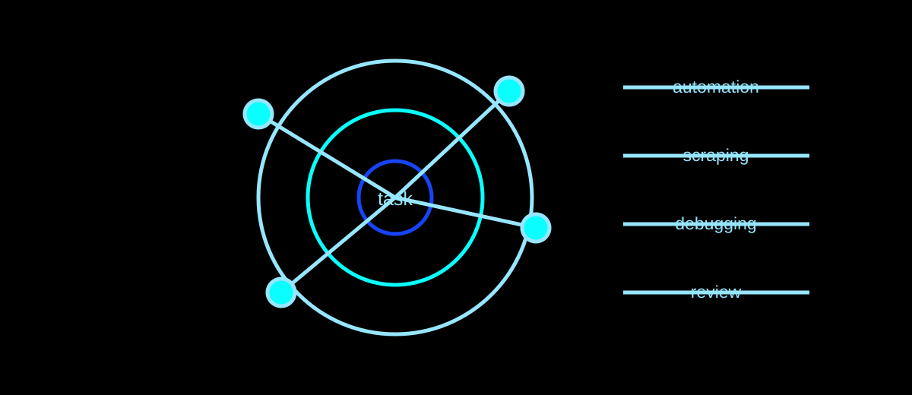

MCP discovery
MCP Radar: Finding Browser MCP Tools Without Skipping Due Diligence
MCP Radar’s browser category is a directory for servers that search, scrape, automate, or inspect the web. It can help turn a vague tool search into candidates; it cannot tell you which server should receive access to a browser session.
Published

Quick definition
MCP Radar is a directory of MCP servers. Its browser and web category includes projects for browser automation, web scraping, and page interaction, with directory metadata such as activity and repository signals.
Choose by task boundary
Write the smallest required capability first: “fetch public HTML,” “run a local-browser test,” or “inspect network requests for this staging page.” Then exclude tools that ask for more access than the task needs. A scraper for public documents does not need your daily browser profile; a test agent does not need production tokens.
Read the upstream repository, not just the directory card. Confirm the installation command, transport, permissions, telemetry, update behaviour, license, and maintainer activity. Run the first test in an isolated environment with a non-sensitive target.
Limits
Directory rankings and “active” labels are snapshots. They are not penetration tests, privacy assessments, or compatibility guarantees. Browser automation can also change a page’s state, even when the task began as reading.